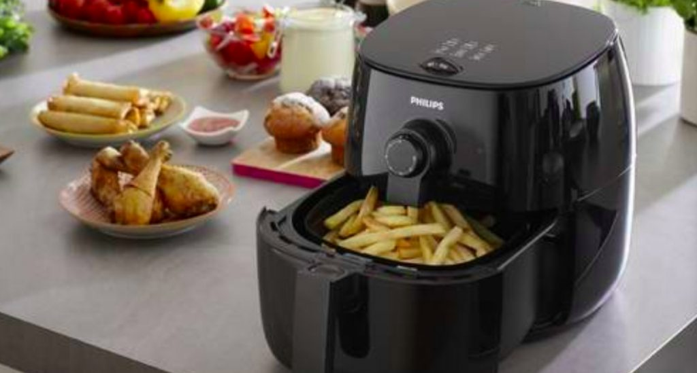

你不能錯過的新聞
外送員休假用熊貓點牛排！ 打開菜單臉綠掉：當客人盤子
2019-11-10
外送平台近年來崛起，外送員激增的狀況下，創造不少熱門話題。近日，就有一名熊貓外送員表示，因為自己晚上休假沒跑單，想說用自家系統點牛排來吃，但沒想到打開菜單後整個傻眼，貼文也引發熱議。
AD
投資新手必看！$200即可投資加密貨幣！
台南、桃園、新竹何處最需要捷運？ 全場答案「一面倒」
2019-11-10
捷運是許多上班族及學生通勤的交通工具之一，而台灣北中南部也皆有捷運系統，然而，近日一名網友就好奇在 PTT 發問「台南、桃園、新竹誰比較需要捷運？」結果眾人答案幾乎一面倒，紛紛認為「此處」最需要。
AD
小資族首選的"零股投資"平台,只要$200就可以投資美股!
子瑜掉「百大美女」100名後 TWICE僅3人上榜「最高42」
2019-11-10
美國網站「TC Candler」每年都會選出全球、亞太區百位美女、帥哥，TWICE台灣籍成員周子瑜去年獲得「亞太區百大美女排行榜」中第四名，今年意外落榜，團中也只有Mina、Sana以及娜璉擠進榜內，

氣炸鍋有塑膠味正常嗎？ 使用者「一神招」秒解：超清新
2019-11-09
近期超夯的氣炸鍋，各大家電廠牌都競爭激烈搶占市場，也有不少好奇的民眾購買使用。一名剛買氣炸鍋的網友就發現，使用時會有「塑膠味」，讓他疑惑這樣是否是正常的？問題也立刻釣出使用者前輩回答，傳授「開鍋」神招
AD
投資新手必看！$200即可投資美股！
遭爆為孫安佐拿小孩 經紀人曝米砂私下狀態
2019-11-08
網紅「老濕姬」米砂因為和孫安佐發生過性行為且傳出影片外流，屢屢遭到網友酸言酸語，讓她日前在IG發文透露：「常常想著死了就能解脫，每一天睡覺前我都會想著活著的理由，到底為什麼我只是做自己喜歡的東西，講自
BTS隊長網購二手褲「忘付運費」 賣家曝對話：好榮幸
2019-11-09
南韓天團BTS人氣紅遍全球，一舉一動都受到關注，日前有位賣家曝光與隊長RM的交易對話，內容提到RM曾跟他購買二手工作褲，儘管是以「金南俊」本名對話，也不承認就是BTS的金南俊，事後該賣家在新聞上看到對
晚上拚跑單！女外送員進辦公室門秒鎖 噁客：睡一下再走
2019-11-09
外送員會遇到各形各色的顧客，尤其是要進入陌生空間裡，有可能面臨危險。一名女外送員晚間送餐時，被要求送入辦公室，但一進門卻立刻上鎖，顧客更出言性騷擾，讓她備感驚嚇。一名在台北做外送的女孩在《靠北 ube
AKIRA林志玲「露營風」婚紗照曝光 對視跨腿好甜蜜
2019-11-10
台灣第一名模林志玲今年6月嫁給日本「放浪兄弟」成員AKIRA，結婚至今5個多月，終於宣布要在本月17日於台南辦婚禮，但僅開放百位親友參與。而今（10日），有網友在IG曝光黑澤夫婦疑似在山區拍「露營風」
Uniqlo最新保暖衣下身「深V高衩」 實穿效果眾人看呆
2019-11-09
主打平價時尚的日本服飾品牌 Uniqlo ，在日本與台灣都受到許多民眾歡迎。一般用來形容 Uniqlo 的關鍵字，大多是舒適、低調、 CP 值高、機能性佳等等，但就是和「性感」沒什麼關係。不過，日本
by
Dable